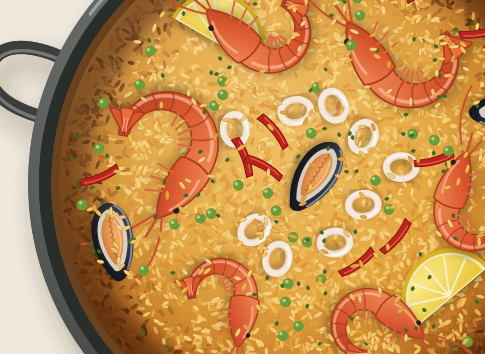

메뉴판 디자인 · SD-MN65
이 디자인으로 상담하기
사르텐 빠에야 & 타파스 주문을 받은 뒤에 쌀을 넣어 강철 팬에서 25분 끓이는 스페인 가정식 저녁 가게. 빠에야는 2인과 3~4인 두 가지 팬 가격으로, 기다리는 동안 곁들일 타파스와 상그리아를 한 장에 담았습니다.
A4 세로 · 1장 · 한국어 · 원화회반죽 미색 · 올리브 · 사프란 골드오른쪽 위로 잘려 나가는 해산물 빠에야 팬
![사르텐 메뉴판 전체. 옅은 회반죽 질감의 미색 바탕 왼쪽 위에 스페인 가정식 · 저녁만 엽니다라는 작은 줄과 큰 명조체 상호 사르텐, 그 아래 빠에야 & 타파스와 기울임체 Sartén이 있습니다. 빠에야는 주문을 받은 뒤에 쌀을 넣고 넓은 강철 팬에서 25분 끓여 팬째 내고, 바닥에 눌어붙은 쌀까지 긁어 먹으면 된다는 설명과, 25분(사프란색) 팬에서 끓이는 시간, 2인분 한 팬의 최소 주문, 봄바 쌀 국물을 머금는 쌀 세 칸이 이어집니다. 오른쪽 위에는 양쪽 손잡이가 달린 검은 강철 빠에야 팬이 페이지 밖으로 잘려 나가며 크게 놓여 있고, 노란 사프란 밥 위에 C자로 굽은 붉은 새우 일곱 마리, 홍합 네 개, 오징어 링, 붉은 피망 조각, 완두콩, 파슬리, 레몬 조각 두 개가 올라가 있으며 가장자리 밥은 갈색으로 눌어 있습니다. 아래 빠에야 표는 2인과 3~4인 두 가격 열로, 처음 오셨다면 표시가 붙은 해산물 빠에야 46,000원·66,000원, 발렌시아식 닭고기 빠에야 42,000원·60,000원, 오징어 먹물 빠에야 48,000원·68,000원, 버섯과 아스파라거스 39,000원·56,000원입니다. 왼쪽 아래 타파스에는 감바스 알 아히요 18,000원, 파타타스 브라바스 12,000원, 하몬 크로케타 4개 13,000원, 갈리시아식 문어 24,000원, 꽈리고추 구이 11,000원, 판 콘 토마테 8,000원이 한 줄 설명과 함께 있고, 오른쪽 마실 것 표에는 잔과 병·주전자 가격으로 레드 상그리아 9,000원·32,000원, 하우스 와인 10,000원·42,000원, 카바 11,000원·48,000원, 레몬 소다 7,000원, 탄산수 4,000원이 있습니다. 맨 아래 짙은 올리브색 띠에 화–일 17:00–23:00, 월요일 쉼, 빠에야 마지막 주문 21:30, 예약 000-0000-0000, 인스타그램 @example이 적혀 있습니다.](page1.png)

팬째 내는 해산물 빠에야새우와 홍합 아래로 가장자리 밥이 갈색으로 눌어 있는 모습까지 그렸습니다
바꿔 드릴 수 있는 것
- 메뉴 이름, 가격, 인분 구성
- 팬 그림의 재료를 가게 빠에야에 맞춰서
- 벽 메뉴판, 테이블 한 장 메뉴, QR 웹메뉴